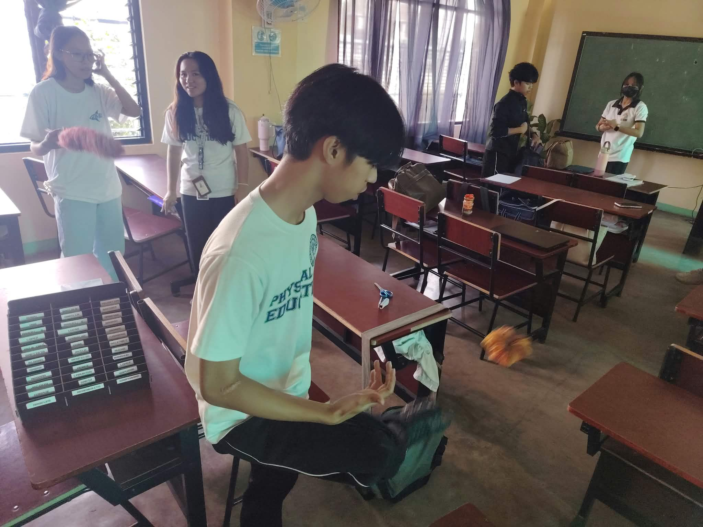
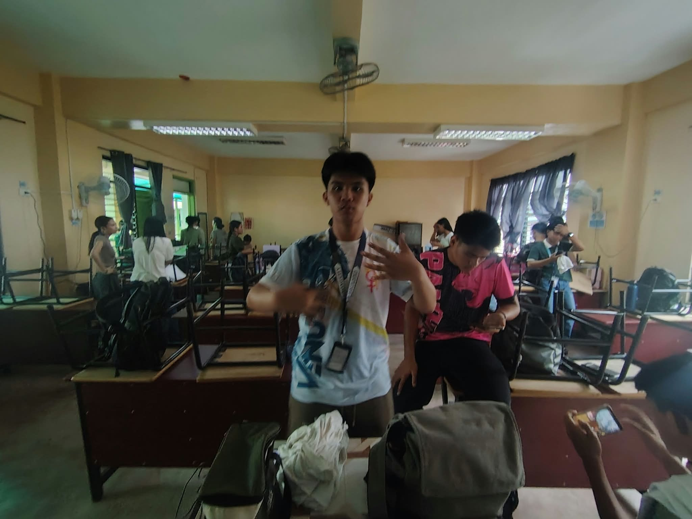
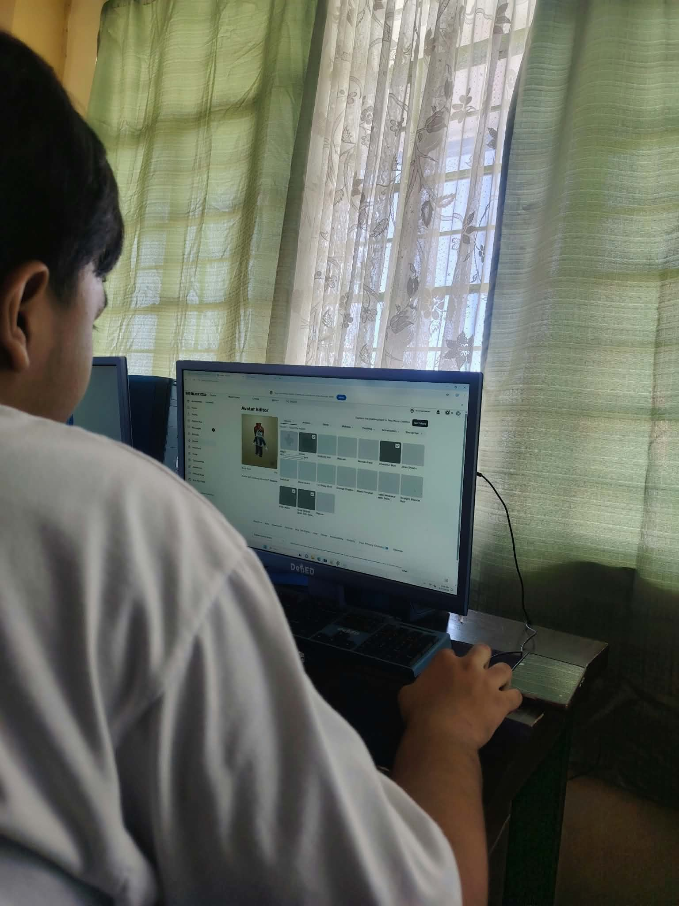
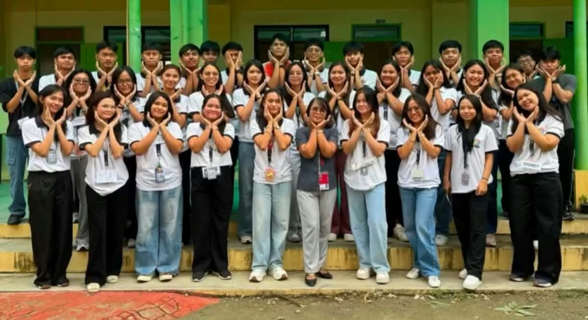

Picture the Campaign
How Present Po! could look around our school.

In the Classroom
Roll call is where Present Po! begins.

Student Life
School is more than lessons. It is friends, games and belonging.

Upstanders
Learners who show up for each other.
